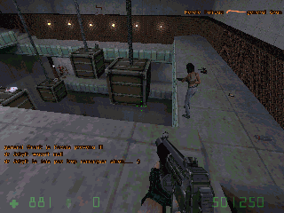

Quelques liens valant le détour:
-
Au sujet des bots:
- Les pages de Botman, auteur du HPB Bot et divers autres projets liés à Half-Life
- Les pages CGF de William van der Sterren, énorme quantité d'infos sur l'IA des bots
- Le POD Bot de Markus Klinge, le bot le plus populaire pour Counter-Strike
- Le TEAMbot d'Alistair Stewart, un autre bot pour Counter-Strike
- Le JoeBot de Johannes Lampel, une IA partiellement basée sur les réseaux neuronaux
- Les Gamebots sur Unreal, des étudiants utilisant le moteur d'Unreal pour leurs travaux
- Les forums de Nuclearbox, nombreuses discussions (et pas mal de bruit) sur les bots
Opposing Force: un bot combattant par-dessus une fosse

-
Au sujet de l'IA tactique: (la plupart de ces liens proviennent des CGF-AI de William)
- Terrain Analysis for Realtime Strategy Games, Dave Pottinger, 2000
- The Basics of Team AI, C. Gibson, J. O'Brien, Red Storm Entertainment, 2001
- How qualitative spatial reasoning can improve strategy game AIs, F, M, D, 2001
- The Use of Artificial Intelligence in the Computer Game Industry, Lars Lidén, 2001
- Terrain Reasoning for 3D Action Games, William van der Sterren, 2001
- AI for Tactical Grenade Handling, William van der Sterren, 2000
- It knows what you're going to do: Adding anticipation to a Quakebot, J.E. Laird, 2000
- The Quake III Arena Bot, J. P. van Waveren, Delft University of Technology, 2001
- Game Design, Game AI, and, sadly, reality, Doug Church, 2001
-
Au sujet des jeux vidéo:
- Planet Half-Life: infos, ressources, téléchargements, MODs et bien d'autres...
- Le site officiel de Counter-Strike: infos, ressources et téléchargements
- Téléchargez le Pack français pour Counter-Strike 1.4, traduction par moi-même
- Téléchargez ce MOD hilarant Rocket Crowbar, version française traduite par moi-même
- Le site officiel de la Rocket Crowbar, par Laser et NinjaX9
-
Au sujet de la programmation des bots:
- Basics on C++ Objects and Inheritance, par Jeffrey 'Botman' Broome
- Le readme.txt original de Botman, fourni avec sa maquette HPB
-
Sujets divers:
- La page du projet OpenBSD, meilleur système d'exploitation du monde
- Le mouvement anybrowser.org, contre la ségrégation par le browser sur Internet
- Ce site expliquant très bien la philosophie de l'Open Content, intéressant et didactique
- L'indispensable Google, meilleur moteur de recherche de tout l'Internet

Carabine Colt M4A1